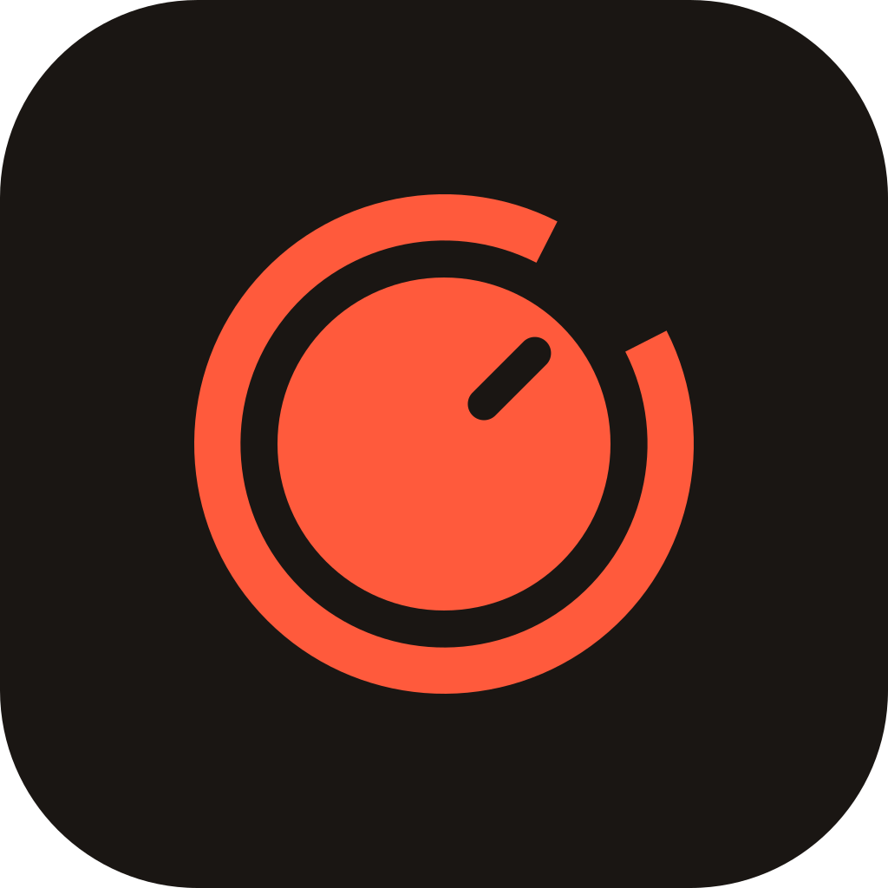
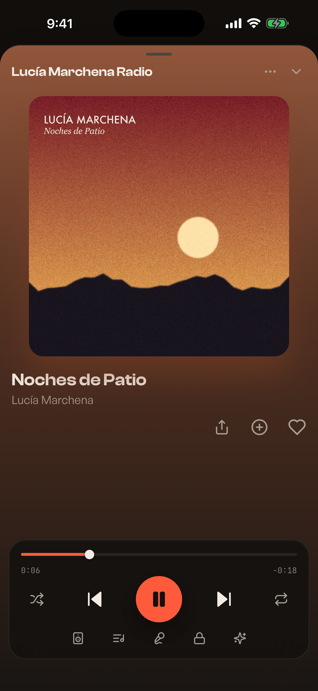
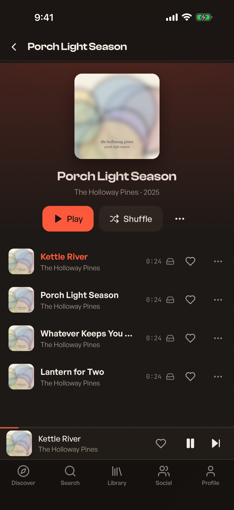
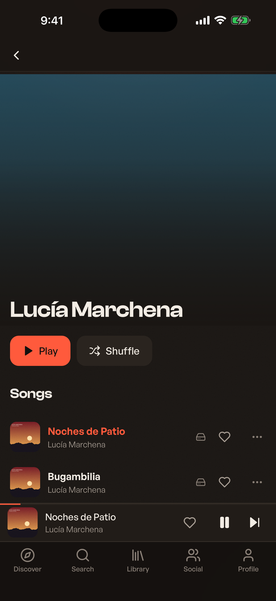
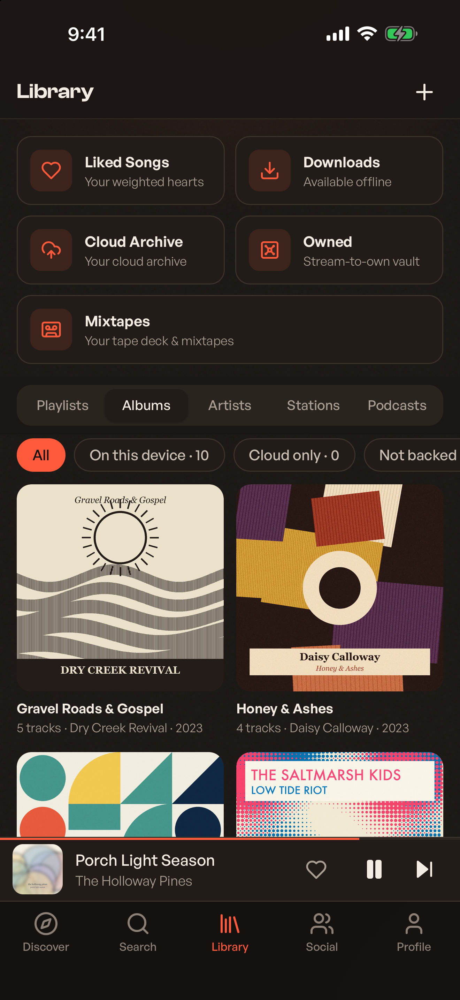

Jams Player Private beta · payments on a test networkThe player that pays the artist.
Music that fits your moment, on your device. Artist-direct micropayments; the platform never takes custody.
J1
Radio from any artist
Start a station from an artist you love and it keeps going.


J2
Albums, start to finish
Open an album and play it through, or shuffle.
J3
Every artist, one tap away
Artist pages put their songs up front.


J4
Your library, kept
Your albums, artists and songs in one place. Reinstall, restore from your recovery kit, nothing is gone.
J5
Stations and podcasts
Radio from your own library; podcasts alongside your music.
What is true here
On your deviceNo servers. Your library and your keys stay with you.
Never holds the moneyArtist-direct micropayments; the platform never takes custody.
Independent artistsEvery artist in the Jams catalog is verified and paid directly.
Private beta
Join the private beta
Email us to join the private beta. Tell us whether you listen, make music, or both. One reply, no list.
contact@jams.community